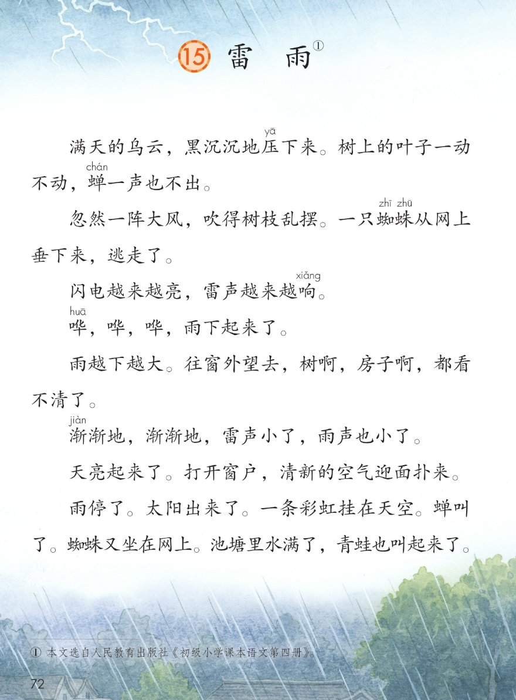
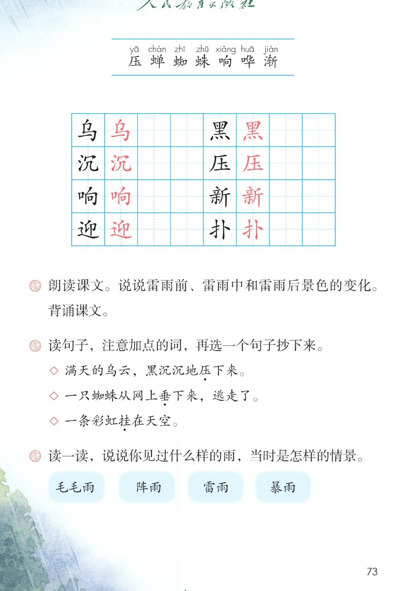

×
🔊 手机听不到声音怎么办？
① 先把手机
媒体音量调大 ，确认没开静音、没连蓝牙耳机；在微信里打开的，点右上角「⋯ → 用浏览器打开」。
② 还是没声音？到应用商店免费下载
Microsoft Edge 浏览器 （它自带朗读发声），用它打开本页面就能出声。
③ 换了 Edge 仍然没声音，说明这部手机的
硬件/系统不支持 网页朗读（多为老旧机型）；近几年买的新手机一般都能正常播放。
→ 打开声音自检
⛈️ 第 15 课《雷雨》· 有声图文带读
统编版语文 · 第六单元·阅读 · 课本 第 72~73 页
课文 3 段 · 共 12 句
会认字 7
会写字 8
听写词 10
近义词 4 组
深入理解 8 题
本课本领 朗读·观察·想象画面
🎧 五步学（可随时点任意一句、一个字、一个词单独听）： ① 听读课文 ——写景散文一篇，按雷雨前、雷雨中、雷雨后一句一句读，读到哪一句哪一句发光；开「跟读」后读完一句留时间让你自己读。② 学字词 ——7 个会认字、8 个会写字（含书写提示），点一个读一个。③ 词语·听写·造句 ——先读雷雨词语积累，再听写 10 个词（读两遍→你写→报答案→听示范句），最后听 4 组近义词辨析。④ 深入理解 ——8 道题（认知 / 理解 / 运用 / 拓展），开放题答案不唯一，先想后看。⑤ 分节朗读·想象画面 ——按五步想象雷雨前中后的画面，再听三位朗读者分节读这篇课文。
📚 第六单元·阅读（本课定位）： 第14课《古诗二首》 → 第15课《雷雨》 → （后续课文接用户提供的课本页序）
点段前的 ①②③ 听整段
🔁 跟读模式：关
👁 隐藏注音（自测用）
注音只标本课要认的字和课本在课文里标了音的字，读音来自课本第 73 页生字表
🎤 朗读要求（老师标准） 压 读第一声，蝉 读第二声，蜘 读第一声，蛛 读第一声，响 读第三声，哗 读第一声，渐 读第四声；不添字、不漏字 ：逗号停得短，句号停得长，一句一句读清楚；读出雷雨的变化 ：雷雨前读得闷、紧张，雷雨中读得急、大，雷雨后读得轻松、明亮、高兴；叠词有节奏 ：黑沉沉读得重，哗哗哗读得急，渐渐地读得慢。
①
满天的乌云，黑沉沉地压yā 下来。
树上的叶子一动不动，蝉chán 一声也不出。
忽然一阵大风，吹得树枝乱摆。
一只蜘zhī 蛛zhū 从网上垂下来，逃走了。
闪电越来越亮，雷声越来越响xiǎng 。
②
哗huā ，哗huā ，哗huā ，雨下起来了。雨越下越大。往窗外望去，树啊，房子啊，都看不清了。
渐jiàn 渐jiàn 地，渐jiàn 渐jiàn 地，雷声小了，雨声也小了。
③
天亮起来了。打开窗户，清新的空气迎面扑来。
雨停了。太阳出来了。一条彩虹挂在天空。
蝉chán 叫了。蜘zhī 蛛zhū 又坐在网上。池塘里水满了，青蛙也叫起来了。
🤔 想一想（点我可跳过）
点一张图，听读整页

第 72 页 · 雷雨课文

第 73 页 · 会认字·会写字·课后题
📖 人教版《语文》二年级下册 · 课本第 72~73 页 · 图片仅供个人学习，版权归人民教育出版社所有
点一个字，听读音、词语和课文里的句子
结构、部首、笔画与书写提示为通用规范，供参考，以教材和老师的指导为准
乌
wū
乌云 · 乌鸦
4 画 · 独体
撇画写长，横折钩写稳
黑
hēi
黑色 · 黑夜
12 画 · 上下
上窄下宽，四点底写平
沉
chén
下沉 · 沉重
7 画 · 左右（氵）
左窄右宽，沈字写稳
压
yā
压下来 · 压力
6 画 · 半包围（厂）
横写平，土字写稳
响
xiǎng
响声 · 响亮
9 画 · 左右（口）
左窄右宽，向字写稳
新
xīn
新年 · 新鲜
13 画 · 左右（斤）
左窄右宽，亲字写稳
迎
yíng
欢迎 · 迎接
7 画 · 半包围（辶）
里面卬字写稳，走之托住
扑
pū
扑来 · 扑打
5 画 · 左右（扌）
提手旁写窄，卜字写稳
点一行，听词语和课后题的答案
📖 课后题（课本第 73 页照录） ：① 朗读课文。说说雷雨前、雷雨中和雷雨后景色的变化。背诵课文。 ② 读句子，注意加点的词，再选一个句子抄下来（压 下来 / 从网上垂 下来 / 挂 在天空）。 ③ 读一读，说说你见过什么样的雨，当时是怎样的情景（毛毛雨、阵雨、雷雨、暴雨）。
黑沉沉 黑沉沉 黑压压
越下越大 越下越大 越来越亮
渐渐地 渐渐地 慢慢儿
清新 清新 清爽
读两遍 → 你在纸上写 → 报答案 → 听示范句
准备听写 · 共 10 个词
○ ○ ○
点下面的「开始听写」，听到一个词就写一个词。
▶ 开始听写
🔁 再读一遍
👁 看答案
点词听读，点句子听示范句，再自己说一句
1 乌云 会写字 · 乌
示范句：满天的乌云，黑沉沉地压下来。
✏️ 我也能说：什么样的乌云
2 黑色 会写字 · 黑
示范句：乌云黑沉沉的，天空变成黑色。
✏️ 我也能说：什么是什么颜色
3 下沉 会写字 · 沉
示范句：雨前天色越来越沉，乌云直往下沉。
✏️ 我也能说：什么往下沉
4 压力 会写字 · 压
示范句：满天的乌云黑沉沉地压下来，像有压力。
✏️ 我也能说：什么带来压力
5 响声 会写字 · 响
示范句：雷声越来越响，响声传得很远。
✏️ 我也能说：什么发出响声
6 新年 会写字 · 新
示范句：雨后的空气像新年一样清新。
✏️ 我也能说：什么是新的
7 欢迎 会写字 · 迎
示范句：雨停了，我们欢迎太阳出来。
✏️ 我也能说：欢迎谁来
8 扑来 会写字 · 扑
示范句：清新的空气迎面扑来，青蛙扑通跳下水。
✏️ 我也能说：什么扑来
9 雷雨 课文词 · 雷
示范句：雷雨前乌云密布，雷雨中大雨倾盆。
✏️ 我也能说：什么样的雷雨
10 窗户 课文词 · 窗
示范句：雨停了，打开窗户，清新的空气迎面扑来。
✏️ 我也能说：打开什么
相同点 / 不一样在哪 / 各造一句
忽然 — 突然
相同：都表示事情发生得快、没想到 。
不一样：忽然 更书面，突然 更口语，都指没有想到就发生了。课文写忽然一阵大风。
忽然：忽然一阵大风，吹得树枝乱摆。
渐渐 — 慢慢
相同：都表示变化慢、不着急 。
不一样：渐渐 写变化的过程，慢慢 更口语，都指一点一点地变。课文写渐渐地雷声小了。
渐渐：渐渐地，雷声小了，雨声也小了。
清新 — 新鲜
相同：都表示干净、舒服 。
不一样：清新 常形容空气，新鲜 常形容食物或空气，意思很近。课文写清新的空气。
清新：雨后的空气十分清新。
黑沉沉 — 黑压压
相同：都形容很黑、很重 。
不一样：黑沉沉 形容天色、乌云，黑压压 形容人多或东西密，都给人压抑感。课文写乌云黑沉沉。
黑沉沉：满天的乌云黑沉沉地压下来。
越…越… 越来越亮 越下越大 越来越响
渐渐地（叠词） 渐渐地 慢慢儿
ABB 式 黑沉沉 绿油油 亮晶晶
一…不… 一动不动 一声不响
标「答案不唯一」的题，说得有道理都对
认知 课文按什么顺序写了雷雨的过程？用自己的话说一说。看解析
🤔 想一想
解析：
按雷雨前、雷雨中、雷雨后
先乌云大风，再大雨倾盆，最后天晴彩虹
🌈 答案不唯一，说得有道理都对
认知 课文可以分成几个部分？分别写了哪些景物？看解析
🤔 想一想
解析：
雷雨前：乌云、大风、闪电雷声
雷雨中：大雨、看不清的树房
雷雨后：天亮、彩虹、蝉蛙叫
理解 雷雨前、雷雨中、雷雨后的景色有什么不同？怎么读出这种变化？看解析
🤔 想一想
解析：
闷热安静，乌云压顶、树叶不动
紧急猛烈，大雨看不清
清新明亮，彩虹空气好
理解 从哪些词句可以看出雨下得很大？看解析
🤔 想一想
解析：
雨越下越大
树啊房子啊都看不清了
雨大得遮住了视线
理解 雷雨后的景色为什么让人觉得清新、愉快？看解析
🤔 想一想
解析：
天亮了、太阳出来、彩虹挂天空
清新的空气迎面扑来
蝉叫了、青蛙也叫起来了
运用 用越…越…说一句话。看解析
🤔 想一想
解析：
越…越…表示一次次加深
风越刮越大、雪越下越急都行
🌈 答案不唯一，说得有道理都对
运用 你见过什么样的雨？当时是怎样的情景？看解析
🤔 想一想
解析：
毛毛雨、阵雨、雷雨、暴雨
细的像烟、急的湿透都行
🌈 答案不唯一，说得有道理都对
拓展 你喜欢雷雨后的景色吗？为什么？看解析
🤔 想一想
解析：
雨后清新明亮、彩虹美丽
空气好、动物热闹、世界干净
🌈 答案不唯一，说得有道理都对
点一步，听这一步
💬 想象支架：先 想乌云压顶、天色变暗 → 再 想大风起来、闪电雷声 → 接着 想大雨哗哗、越下越大 → 最后 想天晴彩虹、蝉叫蛙鸣、空气清新。
点一张卡，听这一段的句子
🌈 雷雨前·朗读者
雷雨前：满天的乌云压下来
💬 雷雨前，读得闷、紧张、安静
🌈 雷雨中·朗读者
雷雨中：哗哗哗雨下起来
💬 雷雨中，读得急、大、猛烈
🌈 雷雨后·天晴·朗读者
雷雨后：天亮了太阳出来
💬 雷雨后放晴，读得亮、舒服
🌈 雷雨后·动物·朗读者
雷雨后：蝉叫了青蛙也叫
💬 雷雨后动物，读得轻松、高兴